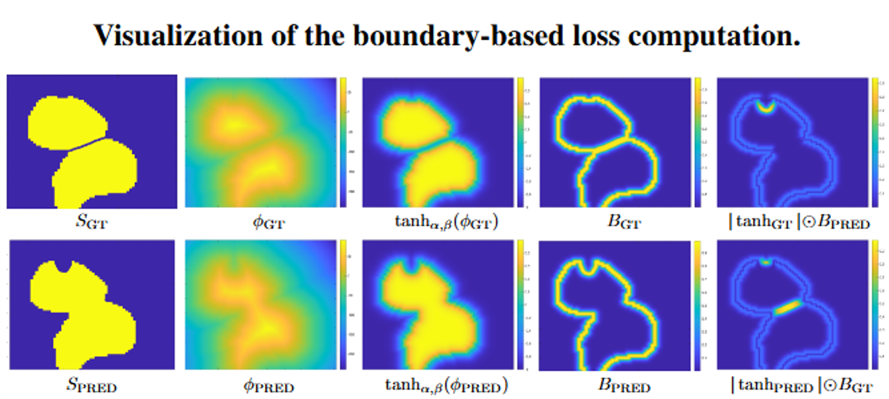

Abstract
Accurate delineation of individual cells in microscopy videos is essential for studying cellular dynamics, yet separating touching or overlapping instances remains a persistent challenge. Although foundation-model for segmentation such as SAM have broadened the accessibility of image segmentation, they still struggle to separate nearby cell instances in dense microscopy scenes without extensive prompting.
We propose a prompt-free, boundary-aware instance segmentation framework that predicts signed distance functions (SDFs) instead of binary masks, enabling smooth and geometry-consistent modeling of cell contours. A learned sigmoid mapping converts SDFs into probability maps, yielding sharp boundary localization and robust separation of adjacent instances. Training is guided by a unified Modified Hausdorff Distance (MHD) loss that integrates region- and boundary-based terms.
Evaluations on both public and private high-throughput microscopy datasets demonstrate improved boundary accuracy and instance-level performance compared to recent SAM-based and foundation-model approaches.
Motivation
In dense microscopy scenes, the main bottleneck is not foreground–background segmentation, but the accurate separation of nearby or touching cells. Standard pixel-wise objectives such as binary cross-entropy fail to capture subtle boundary discrepancies, while prompt-driven foundation models struggle when precise boundary localization is required.
Our goal is to explicitly encode cell geometry and directly optimize boundary fidelity during training, rather than relying on post-processing or heuristic instance-splitting.
Method
Our framework builds on a U-Net backbone and predicts a continuous Signed Distance Function (SDF) instead of a binary mask, enabling smooth and geometry-consistent modeling of cell contours. The predicted SDF is transformed through a learned sigmoid mapping, producing probabilistic segmentations and differentiable soft boundaries.
To enforce accurate instance separation, we introduce a boundary-aware Modified Hausdorff Distance (MHD) loss. The loss operates directly on soft boundary representations derived from the SDF and penalizes contour misalignment in both directions (GT→Pred and Pred→GT). This formulation encourages precise boundary localization and eliminates the need for heuristic post-processing.

Experiments and Results
We evaluate on four datasets from the Cell Segmentation Benchmark (Fluo-N2DH-SIM+, Fluo-N2DL-HeLa, Fluo-N2DH-GOWT1, and Fluo-C2DL-MSC) together with a private MCF7 human breast cancer spheroid dataset from Lahav Lab. The private dataset contains 7 spheroids and 539 2D slices, split into 377 training, 81 validation, and 81 test images.
Performance is measured using SEG, an instance-level segmentation accuracy metric. Our method achieves best or second-best performance across all datasets while remaining fully prompt-free.
SAM (ViT-B): prompt-grid density p = 32 or p = 64.
μSAM (*) evaluated on 20 test images due to high inference cost.
| Method | MCF7 | SIM+ | HeLa | GOWT1 | MSC |
|---|---|---|---|---|---|
| U-Net | .492(.120) | .629(.254) | .774(.026) | .904(.025) | .420(.194) |
| SAM (p=32) | .411(.177) | .508(.256) | .795(.042) | .943(.019) | .229(.140) |
| SAM (p=64) | .431(.182) | .518(.243) | .917(.012) | .938(.015) | .253(.141) |
| μSAM | .517(.184) | .789(.104)* | .867(.022)* | .843(.030)* | .713(.107)* |
| Cellpose | .521(.106) | .597(.206) | .849(.044) | .933(.026) | .554(.175) |
| Ours | .798(.093) | .788(.077) | .892(.030) | .944(.018) | .775(.102) |
| LCE | LLSE | LLMHD | LRMHD | GOWT1 | MSC |
|---|---|---|---|---|---|
| ✓ | ✓ | .901(.180) | .759(.123) | ||
| ✓ | ✓ | ✓ | .882(.045) | .634(.147) | |
| ✓ | ✓ | ✓ | .899(.020) | .689(.123) | |
| ✓ | ✓ | ✓ | ✓ | .944(.018) | .775(.102) |
Conclusion
We introduced a boundary-aware instance segmentation framework that predicts continuous SDFs and optimizes a differentiable MHD loss to achieve precise boundary localization and reliable separation of closely packed cells. The proposed method achieves consistent, competitive performance across both public and private microscopy datasets while remaining fully prompt-free.
BibTeX
@inproceedings{mendelson2026boundary,
title = {Boundary-Aware Instance Segmentation in Microscopy Imaging},
author = {Mendelson, Thomas and Francois, Joshua and Lahav, Galit and Riklin-Raviv, Tammy},
booktitle = {Proceedings of the IEEE International Symposium on Biomedical Imaging (ISBI)},
year = {2026},
note = {Accepted for oral presentation at IEEE ISBI 2026},
url = {https://arxiv.org/abs/2603.21206}
}